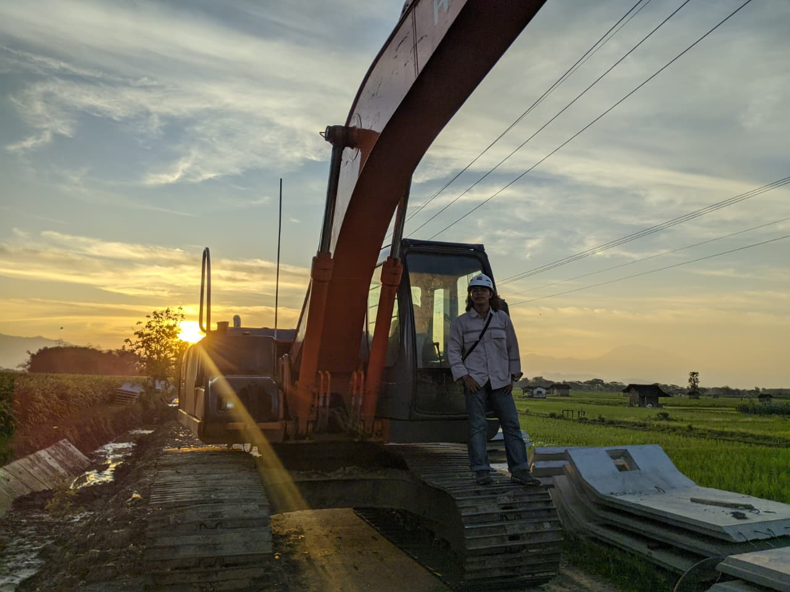

Moch Ferry Dwi Fitriansyah
Water Resources Engineering Student
Mahasiswa D4 Teknik Sipil - Teknologi Rekayasa Konstruksi Bangunan Air - ITS
Hydraulic Modeling | Water Resources Planning | Survey Engineering
Water Resources Engineering Student
Mahasiswa D4 Teknik Sipil - Teknologi Rekayasa Konstruksi Bangunan Air - ITS
Hydraulic Modeling | Water Resources Planning | Survey Engineering
Mahasiswa semester akhir D4 Teknik Sipil, program studi Teknologi Rekayasa Konstruksi Bangunan Air di Institut Teknologi Sepuluh Nopember dengan fokus pada perencanaan sumber daya air dan analisis hidrolika. Berpengalaman melalui magang pada proyek irigasi di BBWS Bengawan Solo dan Konsultan CV Intishar Karya, serta keterlibatan dalam Survei Proyek Sumur Irigasi Dangkal (SID) di Madura yang mendukung analisis teknis dan pengawasan lapangan. Didukung kemampuan menggunakan software HEC-RAS, ArcGIS, dan AutoCAD, serta siap berkontribusi dalam perencanaan dan analisis di bidang keairan.
